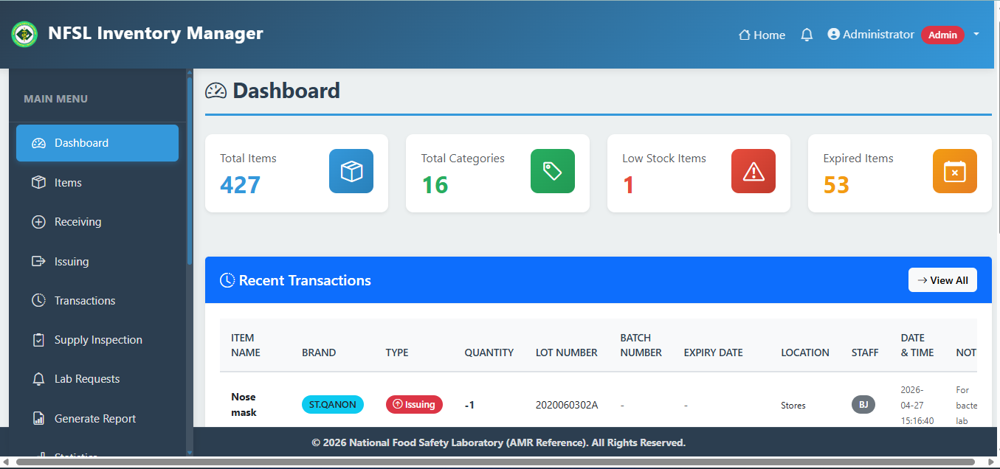

I am a Software Engineer specializing in full-stack development and AI engineering. Using Python, Flask, Django and React, I build scalable, user-focused applications that solve real-world problems. I also develop machine learning models and integrate AI capabilities into intelligent software to automate processes, enhance functionality and drive data-informed decisions.
Beyond software engineering and AI, I specialize in developing AI-powered Telegram bots that streamline workflows and improve operational efficiency. With a background as a Veterinary Doctor, I bring a unique interdisciplinary perspective to technology.
View ResumeNational Food Safety Laboratory (NFSL), Accra
Thrive Africa, Remote
InternPulse, Remote
A web-based Laboratory Management System designed to replace fragmented Excel-based laboratory workflows at the National Food Safety Laboratory. I helped develop and migrate workflows for laboratory inventory, sample reception, media preparation and bacteriology, applying backend and database development principles to improve the organization and management of laboratory records and operational data.
Tech Stack: Python, Backend Development, Relational Databases, SQL.

A Python-based job discovery system that collects technology job listings, evaluates their relevance, and delivers matched opportunities through Telegram. It features a SQLAlchemy database layer with CRUD operations, job deduplication, status tracking, and filtering by location, remote status and match score, plus automated scoring, scheduled searches and pipeline orchestration across LinkedIn job-alert emails, RemoteOK and We Work Remotely.
Tech Stack: Python, SQLAlchemy, SQLite/PostgreSQL, Telegram API, REST APIs.
A production veterinary services website designed and developed for a client, covering home veterinary care, vaccinations, senior pet care, services, booking and contact workflows. I built and deployed the client-facing platform on Render based on the client's service requirements.
Tech Stack: Full-Stack Web Development, HTML, CSS, JavaScript, Python, Render.
A machine learning-powered web app that predicts the likelihood of diabetes based on factors like age, blood pressure, and general health status. Built with XGBoost and optimized through parameter tuning, it features data preprocessing, imbalanced dataset handling, and an interactive Streamlit interface. While not for clinical use, this project highlights the role of data and AI in medical diagnostics, emphasizing the importance of feature engineering and model optimization.
Tech Stack: Python, Scikit-Learn, XGBoost, Pandas, NumPy, Imbalanced-Learn, Matplotlib, Seaborn, Streamlit.
A machine learning model that predicts pet adoption likelihood based on factors like age, breed, and health status using a U.S. pet adoption dataset. Built with XGBoost and optimized with GridSearchCV, it achieves 78% accuracy, providing insights for shelters and adoption agencies. A Power BI dashboard visualizes key trends, helping improve adoption strategies.
Tech Stack: Python, Scikit-Learn, XGBoost, Pandas, NumPy, Power BI, Matplotlib, Seaborn.
Pedmonie is a platform dedicated to making payment processes smooth, secure, and stress-free. As a backend developer on this startup, I contributed to building APIs using Django and implementing CI/CD pipelines to ensure efficient deployment and maintenance.
Tech Stack: Python, Django, Django REST Framework, MySQL, GitHub Actions.
A Telegram bot for seamless video downloads from YouTube, Instagram, Twitter, TikTok (no watermark), LinkedIn, Facebook, and Pinterest. Built with Python (pyTelegramBotAPI) and web scraping, it fetches videos instantly—just paste a link, and the bot provides the video or a direct download link.
Tech Stack: Python, Selenium, pyTelegramBotAPI, Telegram API
A Flask-based Payment Gateway API integrating Paystack for secure transactions. This project enhances backend development skills by implementing payment processing, API documentation, and CI/CD automation with GitHub Actions. Successfully deployed on Render, it demonstrates best practices in API development, deployment, and integration.
Tech Stack: Flask, Paystack API, GitHub Actions, Render, REST API, Postman